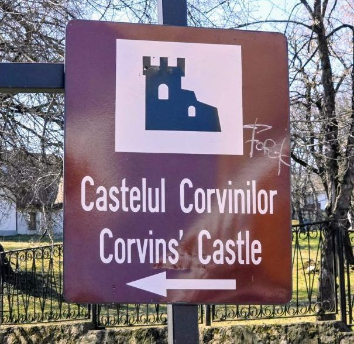
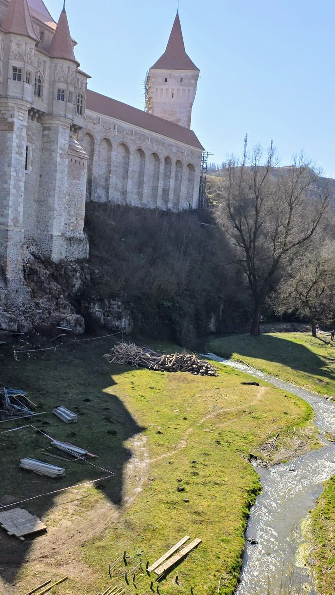
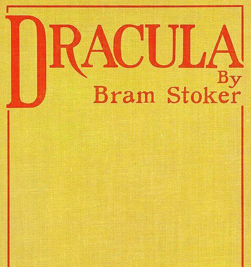
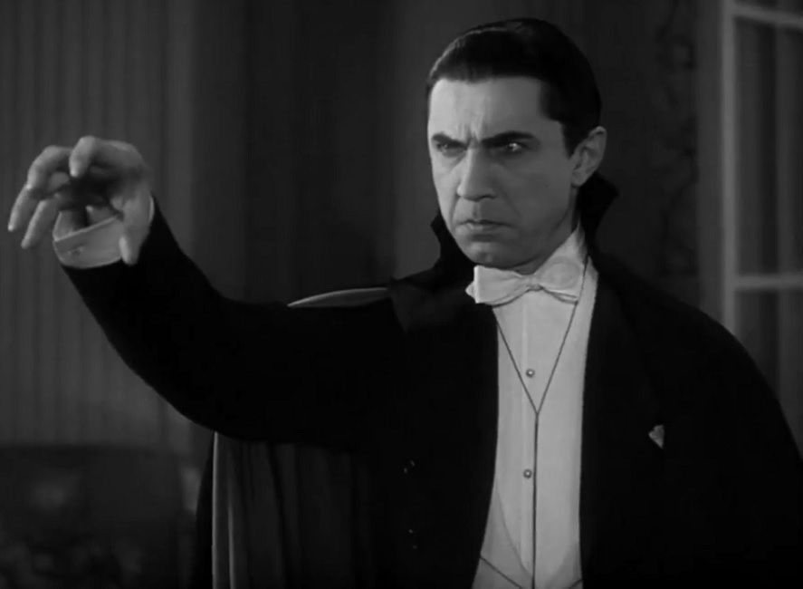
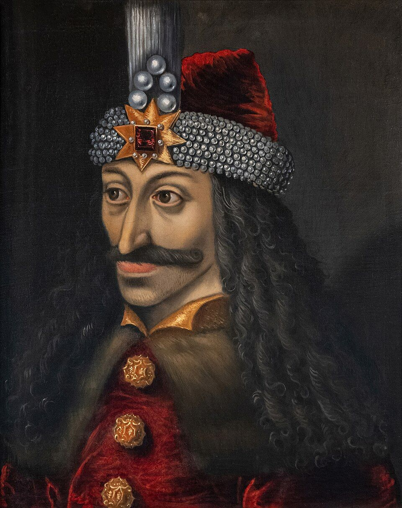
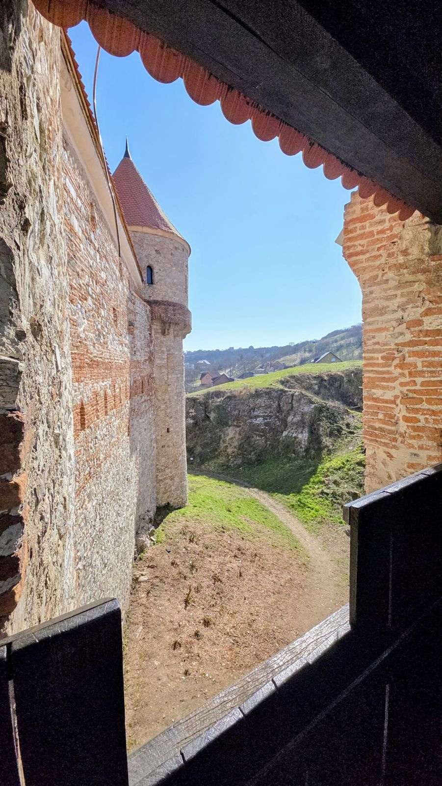

Journey 02 · Hunedoara Note 1 of 12 Field Note
Corvin Castle and the Problem with Dracula

One of the funny things about traveling is how often the things you expect to see sometimes end up being the least interesting part of the story.
Before coming to Romania, if you had asked me where Dracula’s castle was, I probably would have said Bran Castle. That’s the one you see in photos. It’s the one on postcards. It’s the one most tourists go to when they want to check “Dracula’s castle” off the list. But then I arrived at Corvin Castle, and immediately thought: Wait… this is the castle Dracula should have had!

This is what a castle looks like when I think about classic castles – the pointy roofs! The towers! The bridge across a deep moat! It was like seeing the castle of Far, Far Away up close and in real life.
The castle rises up dramatically on a hilltop, overlooking the entire town of Hunedoara. A long wooden bridge lets visitors cross the chasm below to bring you into the castle. If you stop along the bridge and look down at the foot of the castle, it looks like it grew directly out of the rocky ground, as if it has always been here.

With the dramatic towers, tall battlements, narrow archers’ windows, and flocks of crows everywhere, it is easy to imagine how with a dark and stormy sky this is the exact place you would choose if you were looking for a location for your vampire movie. In fact, several directors did exactly that since Corvin Castle has been featured internationally in films like The Nun, Ghostrider: Spirit of Vengence, Singh Is Bliing, and the most recent Nosferatu. It was also in Age of Empires II as the “Magyar Wonder”.
And yet. And yet….
And yet historically speaking, this castle has almost nothing to do with Dracula.
Like most things connected to Dracula, the truth is a bit stranger (and more unexpected!) than the legend.



The character Dracula was created by the Irish writer Bram Stoker in his 1897 novel Dracula. This novel was actually his 7th, and before his death he had published 18 novels in total – but nothing even comes close to what he created when he wrote Dracula. It is widely believed that Stoker was inspired by the castles of Romania. However, Stoker likely never visited Romania at all, and the castle most tourists associate with the story, Bran Castle, only became linked with Dracula much later for tourism reasons. And while Stoker was inspired by existing vampiric folklore, his was not the first vampire novel (Did you know that in 1872, almost 25 years before Dracula, a novel titled Carmilla was published that featured a lesbian vampire who could transform into a cat? I did not!), nor was his inspiration limited to traditional tales. He invented several “facts” about vampires – one of them being that they have no reflection in a mirror, likely inspired by Irish folklore that says mirrors show the human soul.
Dracula (the character) has the honor of being the most portrayed literary character according to the Guinness Book of World Records – he is twice as likely to be portrayed as another literary icon, Sherlock Holmes. It should not be a surprise then that some accepted lore about Dracula doesn’t come from the novel at all! The black and red color scheme with slicked back hair comes from both Bela Lugosi and Christopher Lee’s portrayals of the monster, while Gary Oldman gave Dracula his iconic Romanian accent and longer hair in more modern times. In fact, it is only through movie interpretations that Dracula even has fangs! In the original novel, the Count has sharp teeth, but it is never described as fangs.
You know who is unlikely to have been an influence on Stoker and Dracula? Vlad Dracula – more commonly known as Vlad the Impaler. Stoker took extensive notes, and the closest he comes to mentioning Vlad or any of the Dracul’s is a note he took from a book that (incorrectly) stated Dracula means devil. His father, Vlad II, was part of a chivalric order known as the Order of the Dragon, and the family name Dracul came from that connection. Vlad III therefore became known as Dracula, meaning “son of the dragon.” Ironically – considering how Dracula is portrayed in at least American media – the original title dracul and the original Order of the Dragon was specifically created as a Crusades equivalent, charged with protecting the cross and Christianity. Their symbol was even a dragon, not a wolf, bat or wisp of fog to be seen.
Having recently learned of Vlad III’s many, MANY conquests, I have to lean on the side of the professionals here: with such a rich history and larger-than-life inspiration, it seems unlikely that Stoker actually knew anything at all about any of the Vlad Dracul’s. Fun fact: I always thought Dracula’s first name was Vlad, as in “Count Vlad Dracula”, but turns out in the novel, Dracula is only ever referred to by his family name or more simply as just “Count”.
So, the famous vampire name actually has nothing to do with bats, fangs, or castles. Learning about the difference between book, movie, and history has me feeling untethered – as a life-long reader and lover of horror, I was shocked to learn that not only is my mental image of Dracula inspired more by 1930s Hollywood than the novel, but that my historic connection of Vlad the Impaler is likely incorrect too!

Standing there, it also struck me how tangled the threads of history, folklore, and media have become. A real historical figure, Vlad III of Wallachia, becomes loosely associated with a gothic novel written centuries later by Bram Stoker, who likely never even visited Romania, and who borrowed the name “Dracula,” probably because it sounded exotic and ominous.
And yet, the connection stuck and this fiction began reshaping how people imagine the real places. Castles that had nothing to do with the story become associated with it, and eventually the legend starts to feel almost as real as the history itself.
Somewhere between medieval politics, local folklore, and Victorian horror fiction, Dracula stopped being just a character and became part of the landscape. It also feels like a reminder of something academics know well: footnotes have a habit of wandering far beyond the page. One historian mentions a name in passing, a novelist finds it intriguing, and suddenly centuries later tourists are standing in castles wondering where the vampire lived and where to buy their garlic-themed souvenirs.
Standing inside of Corvin Castle though, it was hard not to let the imagination run a little. The towers and narrow corridors feel built for secrets. The stone halls echo even when only a few visitors are walking through them. Looking down from the ramparts, you can easily picture watchmen scanning the hills for approaching armies…
…Or perhaps something else.

Even on a bright afternoon, with tourists wandering the courtyard and cameras clicking, the castle still feels like a place where stories live.
And Romania, it turns out, has quite a few of them.
Mentioned in
Originally published at fieldnotesfromabroad.com/2026/03/09/corvin-castle/